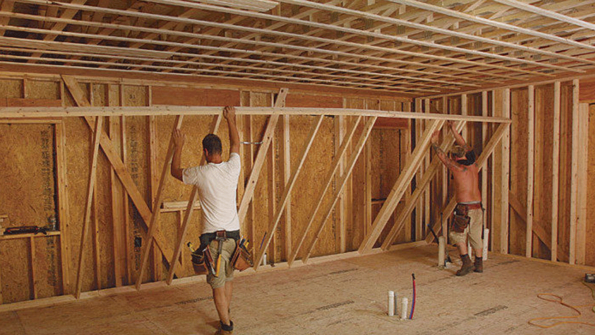
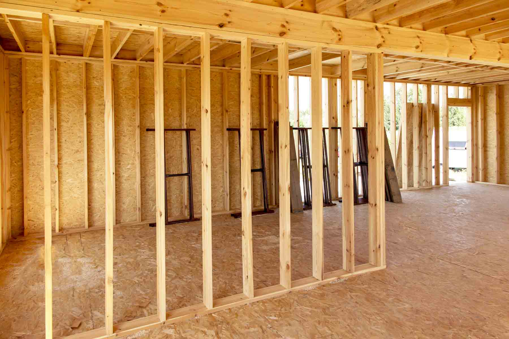

What Is Framing & Structural Work?
Framing and structural work involves building or reinforcing the core skeleton of your home or building. This includes walls, floors, ceilings, roof structures, beams, and supports that ensure your home is stable, safe, and ready for finishing work.
Why Is Framing & Structural Work Important?
- Provides the essential support for your home’s structure
- Prevents sagging, shifting, or structural failure over time
- Ensures your home meets building codes and safety standards
- Creates a reliable base for renovations, additions, and finishes
- Increases long-term durability and property value
Steps in a Framing & Structural Project
- Inspection & Assessment: Examine the site and identify structural needs or damage.
- Material Selection: Choose quality lumber, steel, or engineered materials.
- Preparation: Clear the area, set foundation points, and plan layout.
- Framing & Assembly: Build walls, floors, ceilings, and support structures with precision.
- Final Inspection: Verify structural integrity, alignment, and compliance with building codes.
Signs You May Need Framing or Structural Work
- Cracks in walls, ceilings, or foundation
- Sagging floors or uneven surfaces
- Bowing or leaning walls
- Water damage or termite-related weakening
- Older homes showing general structural wear
Note: Timely framing and structural repairs protect your home, prevent costly damage, and ensure safety for years to come.



.jpg)
Back to Services